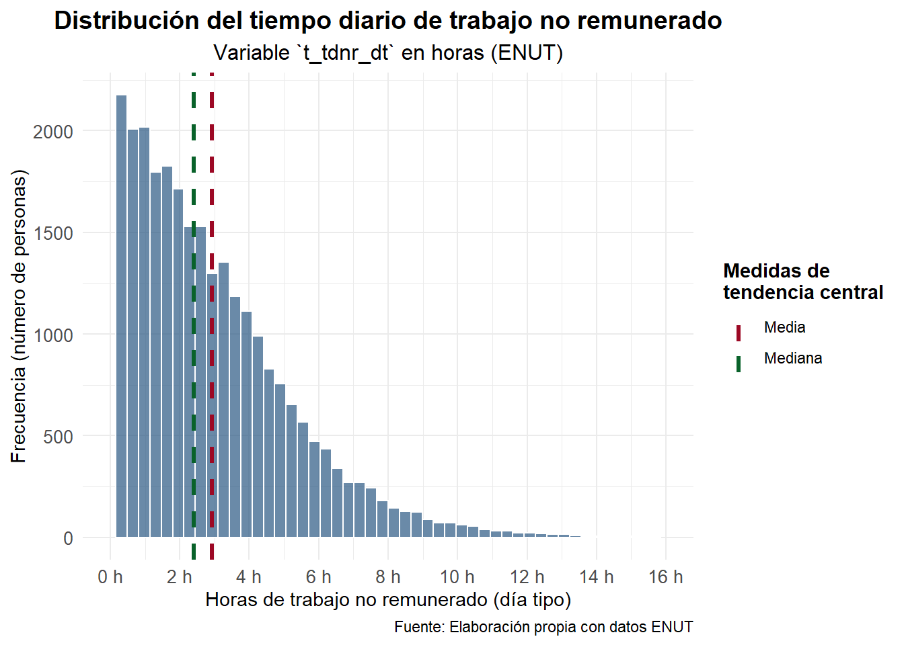
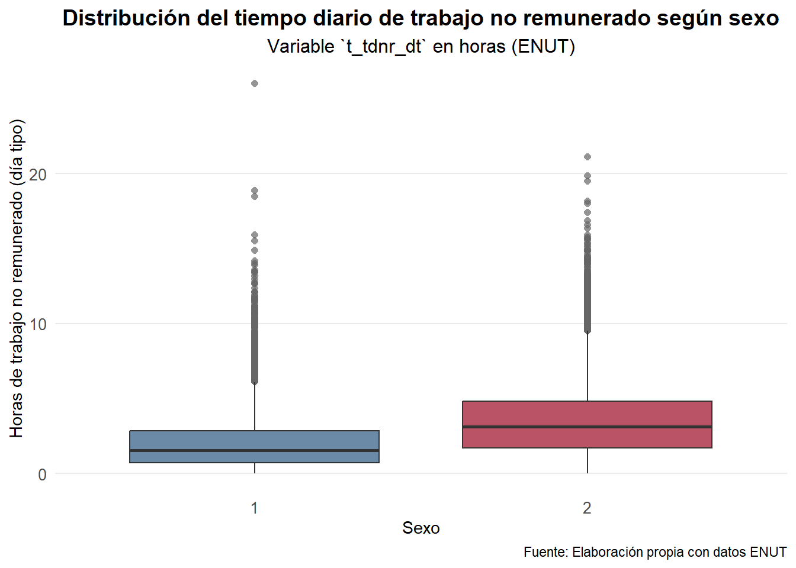
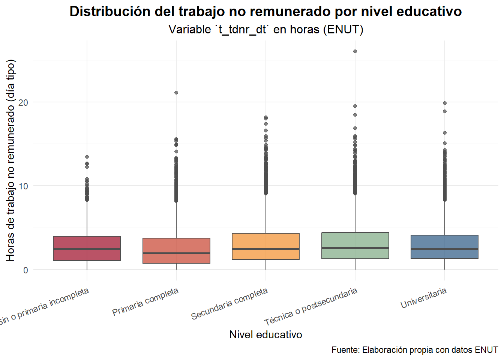

if (!requireNamespace("pacman", quietly = TRUE))
install.packages("pacman")
pacman::p_load(tidyverse, # colección de paquetes, dplyr entre ellos, pero también haven
dplyr, # manipular datos
psych, # para estadísticas descriptivas
sjmisc, # explorar datos
ggplot2, # para visualizar gráficos
scales) # para ajustar gráficos
# Cargar ENUT
datos <- readRDS("data-sesiones/enut.RDS")Sesión 3: Prueba de Hipótesis (II) y ANOVA
Taller de Métodos y Técnicas de Investigación I
En esta sesión entraremos de lleno en estadística inferencial, retomando desde contenidos de la sesión pasada, pero con un enfoque más riguroso. Ahora bien, si iremos viendo contenido más aplicado en técnicas y test estadísticos.
Objetivos de la sesión
- Conocer test de hipótesis y aprender a realizarlos en R
- Conocer ANOVA y tests bivariados
Primero llamamos los paquetes que utilizaremos en la sesión y la base de datos que utilizaremos
Estadística inferencial
Como habíamos visto en la sesión pasada, el objetivo de la estadística es usar la información contenida en una muestra para hacer inferencias para sacar conclusiones sobre la población de la que proviene. Dado que las poblaciones se describen mediante valores numéricos —los llamados parámetros—, gran parte del trabajo estadístico consiste en estimar uno o varios de esos parámetros a partir de la muestra. Una forma de testear si un estimador, a partir de nuestra muestra, contiene información suficiente para hacer afirmaciones poblaciones, es justamente a través de test o pruebas de hipótesis.
Test de hipótesis
Un test de hipótesis, por ahora solo simples, corresponde a un método para evaluar si una serie de datos observados (muestrales) se comportan según cierto escenario, esto es, como una hipótesis que haya sido planteada. Así, si se tiene un conjunto de datos u observaciones \(x_1, x_2, \ldots, x_n\) se puede plantear:
- Una hipótesis nula (\(H_0\)), que permitirá evaluar con los datos si estos se comportan según lo planteado cpor \(H_0\). O, de modo contrario,
- Una hipótesis alternativa (\(H_1\) o \(H_A\)), que implicará una proposición contraria a la hipótesis nula, es decir, una afirmación que se considerará verdadera si la evidencia muestral resulta inconsistente con lo planteado por \(H_0\).
Para ello, se debe plantear un modelo probabilístico que traduzca la hipótesis nula en variables aleatorias que generaron las observaciones, de denotaremos como \(X_1, X_2, \ldots, X_n\). Por tanto, en términos generales, el procedimiento de contraste de hipótesis sigue estos pasos:
Plantear las hipótesis:
- \(H_0\): afirmación inicial o de no efecto.
- \(H_1\): afirmación alternativa o de efecto/diferencia.
Elegir el nivel de significancia \(\alpha\) (por ejemplo, 0.05 o 0.01). Esto nos dirá con qué nivel de confianza podremos afirmar, a partir de nuestra muestra, sobre nuestra población.
Seleccionar la estadística de prueba adecuada (por ejemplo, \(Z\), \(t\), \(\chi^2\), \(F\), etc.), dependiendo del tipo de variable, tamaño de muestra y supuestos sobre la población.
Calcular el valor observado de la estadística de prueba con los datos muestrales.
Determinar la región crítica o valor p, y comparar con el nivel de significancia.
Tomar una decisión:
- Si la evidencia es suficientemente fuerte (es decir, el valor \(p < \alpha\) o el estadístico cae en la región crítica), se rechaza \(H_0\).
- En caso contrario, no se rechaza \(H_0\).
De esta forma, un test de hipótesis no “demuestra” que una hipótesis sea verdadera, sino que evalúa si los datos son o no compatibles con el escenario que plantea la hipótesis nula. Entonces, veamos el paso a paso y luego testeemos cosas con R. En general, el nivel de significancia se elige por convención y, además, R te entrega el \(p\)-value como tal. Así que decideremos ahí. No obstante, trataremos que al menos sea \(\alpha = 0{,}05\). Así pues, partiremos desde el punto 3.
Estadísticos de prueba y \(p\)-value
Si definimos una hipótesis nula \(H_0\) y una alternativa \(H_1\), necesitamos una manera objetiva de evaluar qué tan consistentes son nuestros datos con lo que plantea \(H_0\). Para eso se utilizan los estadísticos de prueba.
Un estadístico de prueba es una cantidad numérica que se calcula a partir de la muestra y que resume, en una sola medida, la evidencia disponible contra la hipótesis nula. Su valor se compara con lo que se esperaría bajo \(H_0\), y según el resultado se decide si hay motivos suficientes para rechazarla.
En términos más formales, el estadístico de prueba se construye de modo que su distribución bajo \(H_0\) sea conocida (por ejemplo, una distribución normal estándar, \(t\) de Student, \(\chi^2\), o \(F\)). Así, podemos cuantificar la probabilidad de obtener un valor tan extremo como el observado —o más— si \(H_0\) fuera cierta.
Por ejemplo:
- En una prueba sobre una media poblacional con varianza conocida, el estadístico suele seguir una distribución normal estándar (\(Z\)).
- Si la varianza es desconocida y la muestra es pequeña, se usa una distribución \(t\) de Student.
- Para contrastar varianzas o ajustar modelos de regresión, pueden utilizarse estadísticos \(\chi^2\) o \(F\), respectivamente.
En resumen, el estadístico de prueba actúa como un puente entre los datos y la teoría estadística, permitiendo traducir los resultados muestrales en evidencia cuantificable a favor o en contra de \(H_0\). Por lo tanto, tenemos la siguiente definición formal:
Definición
Si se define \(t(x_1,x_2, \ldots, x_n)\) como la función de los datos observador y \(T(X_1, X_2, \ldots, X_n)\) la variable aleatoria correspondiente a estos, entonces el estadístico de prueba o el test statistic, es el que cálculo que se utilizará para testear \(H_0\). Para que \(T\) sea un estadístico de prueba debe cumplir con dos condiciones:
- La distribución que sigue \(T\) dado \(H_0\) es conocida o aproximadamente conocida
- A medida que aumenta \(t\), existe una mayor evidencia de que no se cumple \(H_0\)
Con ello, a raíz de las observaciones, \(x_1, x_2, \ldots, x_n\), se puede llegar a un valor \(t\) observado o empírico, que le diremos \(t_{\text{obs}}\). Este corresponde al valor de la función de los datos observados y, a partir de este, calculamos su probabilidad dado que se cumple la hipótesis nula: \[ p_{\text{obs}} = \Pr( T \geq t_{\text{obs}} | H_0) \] Este valor \(p_{\text{obs}}\) es lo que conocemos como valor-p o \(p\)-value, y corresponde a la probabilidad de que el estadístico de prueba sea mayor o igual al valor observado bajo el supuesto de que se cumple la hipótesis nula.
Ahora bien, ¿cuál es la intuición detrás del p-value? Bajo el supuesto de que se cumple la hipótesis nula, lógicamente, si la probabilidad de que el estadístico de prueba sea mayor o igual al valor observado, es decir, que difiera más de \(H_0\), podríamos afirmar que es poco probable que la hipótesis nula se cumpla efectivamente.
Por ello, cuando el \(p\)-value es muy bajo, estadísticamente hablando se puede afirmar que la \(H_0\) no se cumple. En otras palabras, el valor-p nos permite cuantificar la evidencia contra la hipótesis nula y, por tanto, fundamentar la decisión estadística del contraste.
Y, entonces, ¿cuál es la utilidad del valor-p? Por convención, un test de hipótesis rechazará la hipótesis nula si el valor-p observado cumple que
\[ p_{\text{obs}} \leq 0{,}05 \] En tal caso, se dice que el resultado es estadísticamente significativo o que presenta significancia estadística al cinco por ciento. De forma más estricta, algunos estudios consideran niveles de significancia más exigentes, por ejemplo \[ p_{\text{obs}} \leq 0{,}01 \] En ese caso, se afirma que el resultado es altamente estadísticamente significativo, o que tiene significancia estadística al uno por ciento.En ambos escenarios, el valor-p nos informa sobre la intensidad de la evidencia contra la hipótesis nula: cuanto menor es el valor-p, mayor es la evidencia en su contra.
Significancia estadística vs. significancia práctica
Aun cuando por convención se tiende a interpretar el valor-p en función de un umbral fijo (como 0,05 o 0,01), en la práctica muchos investigadores optan por reportar el valor-p observado sin necesariamente dictaminar una decisión tajante respecto a \(H_0\). De este modo, se deja a criterio del lector o del analista la contundencia o relevancia de la evidencia empírica obtenida.
Aquí conviene distinguir entre significancia estadística y significancia real o práctica. Un resultado puede ser estadísticamente significativo —es decir, mostrar un valor-p muy bajo— pero, al mismo tiempo, carecer de importancia práctica o sustantiva si la magnitud del efecto observado es demasiado pequeña como para tener relevancia en el mundo real.
En consecuencia, un buen análisis inferencial no solo debe basarse en el valor-p, sino también en la interpretación del contexto, la magnitud del efecto, y la relevancia teórica o aplicada del resultado.
Del concepto al ejemplo con ENUT
Hasta aquí hemos visto la lógica general de un test: plantear \(H_0\), definir un estadístico de prueba cuya distribución bajo \(H_0\) conocemos, obtener el valor observado y, con eso, calcular el \(p\)-value. Ahora vamos a hacer eso mismo pero con nuestros datos.
En la ENUT tenemos, entre muchas variables, una que nos interesa particularmente: el tiempo dedicado al trabajo no remunerado en un día tipo, que en nuestra base está guardada como t_tdnr_dt. A diferencia de la participación (que es 0/1: si hizo o no la actividad), esta variable mide cantidad de tiempo —por ejemplo, en minutos— que la persona efectivamente destinó a trabajo no remunerado.
La pregunta inferencial que podemos hacernos es algo como:
“¿Podemos afirmar, con base en la muestra ENUT, que el tiempo promedio diario dedicado al trabajo no remunerado es distinto de cierto valor de referencia?”
Ese “valor de referencia” (\(\mu_0\)) puede venir de una política, de una medición anterior, de otro país, o simplemente de una cifra redonda que queramos contrastar. Para ilustrar, supongamos que queremos testear si el promedio poblacional de minutos de trabajo no remunerado en un día tipo es igual a 240 minutos (4 horas):
- \(H_0: \mu = 240\)
- \(H_1: \mu \ne 240\)
Es decir, \(H_0\) dice: “en la población, en promedio, se destinan 4 horas al día a trabajo no remunerado” y \(H_1\) dice “no, no son 4 horas: es más o es menos”. Antes de construir el estadístico de prueba, miremos la variable y dejemos los datos limpios (solo no perdidos):
datos_trab_nor <- datos |>
dplyr::mutate(
t_tdnr_dt = haven::zap_labels(t_tdnr_dt), # elimina las etiquetas
t_tdnr_dt = as.numeric(t_tdnr_dt)
) |>
dplyr::select(t_tdnr_dt) |>
dplyr::filter(!is.na(t_tdnr_dt) & t_tdnr_dt < 96)
datos_trab_nor |>
psych::describe() vars n mean sd median trimmed mad min max range skew kurtosis
t_tdnr_dt 1 27387 2.93 2.35 2.4 2.63 2.14 0 26 26 1.39 2.99
se
t_tdnr_dt 0.01Con esto obtenemos tres elementos clave que necesitamos para construir el test:
- El tamaño muestral \(n = 27{,}387\)
- La media muestral \(\bar{x} = 2{,}93\) horas
- La desviación estándar muestral \(s = 2{,}35\) horas
Con esos tres números ya podemos fabricar nuestro estadístico de prueba. Formalicemos lo que queremos hacer entonces. Antes de continuar, no obstante, conviene señalar que, en realidad, una aplicación correcta con la ENUT se deberían usar factores de expansión y diseño muestral (estratos y conglomerados) mediante survey o srvyr. Aquí usamos un esquema SRS solo para fines didácticos. Ahora sí, formalicemos.
Modelo probabilístico y formulación del test
Para dar un paso más formal, recordemos que la inferencia estadística se basa en modelos probabilísticos. En este caso, podemos pensar que cada observación de la variable t_tdnr_dt corresponde a una variable aleatoria continua, que denotamos por \(X_i\), y que representa el tiempo (en horas) que la persona \(i\) dedica al trabajo no remunerado en un día tipo.
Supondremos, pues, que las observaciones provienen de una muestra aleatoria simple extraída de una población con media desconocida \(\mu\) y varianza \(\sigma^2\). Formalmente:
\[ X_1, X_2, \ldots, X_n \quad \text{son i.i.d.} \quad \text{con} \quad \mathrm{E}[X_i] = \mu, ; \mbox{Var}(X_i) = \sigma^2. \]
La hipótesis nula plantea que el promedio poblacional de tiempo diario dedicado al trabajo no remunerado es igual a un valor de referencia \(\mu_0\) (que podemos definir según la evidencia), mientras que la alternativa sugiere que es distinto:
\[ H_0 : \mu = \mu_0 \quad \text{vs.} \quad H_1 : \mu \ne \mu_0. \]
Para evaluar esto, usamos la media muestral \(\bar{X}\) como estimador de \(\mu\):
\[ \bar{X} = \frac{1}{n}\sum_{i=1}^n X_i. \] Bajo las condiciones clásicas del Teorema Central del Límite, sabemos que \[ \frac{\bar{X} - \mu}{S / \sqrt{n}} \approx t_{(n-1)}, \] donde \(S\) es la desviación estándar muestral. Este resultado es la base del test \(t\) de una muestra.
Construyendo el estadístico de prueba (caso: una media)
El estadístico de prueba es la variable aleatoria:
\[ T = \frac{\bar{X} - \mu_0}{S / \sqrt{n}}, \] que mide, en unidades de error estándar, cuán lejos está la media muestral del valor hipotético \(\mu_0\). El valor observado, \(t_{\text{obs}}\), se obtiene reemplazando \(\bar{X}\), \(S\) y \(n\) por sus valores de la muestra.
Si \(H_0\) fuera cierta, esperaríamos que \(T\) siguiera aproximadamente una distribución \(t\) de Student con \(n-1\) grados de libertad. Valores extremos (positivos o negativos) indicarían evidencia contra \(H_0\).
Entonces, solo por poner un ejemplo didáctico, supongamos que queremos evaluar si el tiempo promedio de trabajo no remunerado en un día tipo es igual a 4 horas. En notación formal:
- \(H_0: \mu = 4\)
- \(H_1: \mu \ne 4\)
Como no conocemos la varianza poblacional (lo que casi siempre ocurre en ciencias sociales), utilizamos el estadístico \(t\) de Student, definido como:
\[ T = \frac{\bar X - \mu_0}{S / \sqrt{n}} \] donde:
- \(\bar X\) es la media muestral de
t_tdnr_dt, - \(\mu_0\) es el valor que afirma \(H_0\) (en nuestro ejemplo, 4 horas),
- \(S\) es la desviación estándar muestral,
- \(n\) es el número de observaciones.
Bajo la hipótesis nula, este estadístico sigue aproximadamente una distribución \(t\) de Student con \(n - 1\) grados de libertad. Esto nos permite calcular la probabilidad (valor-p) de observar un valor tan extremo como el nuestro si \(H_0\) fuera cierta. Calculemos todo eso en R paso a paso:
# Valor bajo H0 (en horas)
mu0 <- 4
resumen_trab_nor <- datos_trab_nor |>
dplyr::summarise(
n = dplyr::n(),
xbar = mean(t_tdnr_dt),
s = sd(t_tdnr_dt)
)
resumen_trab_nor# A tibble: 1 × 3
n xbar s
<int> <dbl> <dbl>
1 27387 2.93 2.35Ahora obtenemos el valor observado del estadístico \(t\):
n <- resumen_trab_nor$n
xbar <- resumen_trab_nor$xbar
s <- resumen_trab_nor$s
t_obs <- (xbar - mu0) / (s / sqrt(n))
t_obs[1] -75.6363Como la hipótesis alternativa es bilateral (\(\mu \ne \mu_0\)), el valor-p se calcula como:
p_value <- 2 * (1 - pt(abs(t_obs), df = n - 1))
p_value[1] 0Interpretación inferencial
El estadístico \(t_{\text{obs}}\) obtenido refleja cuántos errores estándar separan nuestra media muestral de las 4 horas hipotéticas. Si \(|t_{\text{obs}}|\) es grande, significa que el promedio observado está muy alejado del valor propuesto por \(H_0\), y por tanto, el valor-\(p\) será pequeño.
En términos probabilísticos, el valor-\(p\) mide:
\[ p = \Pr\bigl(|T| \ge |t_{\text{obs}}| \mid H_0 \bigr), \]
es decir, la probabilidad de obtener un valor tan extremo como el observado si realmente \(\mu = \mu_0\).
Si \(p < 0.05\), diremos que la evidencia empírica es suficientemente fuerte como para rechazar la hipótesis nula.
En resumen:
- Si \(p\) es pequeño, la muestra contradice \(H_0\) → concluimos que el tiempo promedio no es 4 horas.
- Si \(p\) es grande, los datos son consistentes con \(H_0\) → no hay evidencia estadística para rechazarla.
Test automático con t.test()
Sin embargo, en R no tenemos por qué hacer todo este cálculo manualmente. El propio lenguaje incluye funciones que realizan estas pruebas de hipótesis de manera automática, permitiéndonos concentrarnos en la interpretación de los resultados.
En este caso, para contrastar una media poblacional utilizamos la función t.test(), indicando:
- el vector de datos (
t_tdnr_dt), - el valor bajo la hipótesis nula (
mu), - y el tipo de contraste (bilateral, unilateral hacia la izquierda o hacia la derecha).
Por defecto, R realiza un test bilateral, que es justo el que necesitamos.
t.test(datos_trab_nor$t_tdnr_dt, mu = 4)
One Sample t-test
data: datos_trab_nor$t_tdnr_dt
t = -75.636, df = 27386, p-value < 2.2e-16
alternative hypothesis: true mean is not equal to 4
95 percent confidence interval:
2.897934 2.953610
sample estimates:
mean of x
2.925772 Interpretación del resultado
Podemos interpretar esta salida así:
- El valor observado del estadístico de prueba es t = -75.64, con 27,386 grados de libertad.
- El valor-p < 2.2e-16, extremadamente inferior a cualquier nivel usual de significancia (\(\alpha = 0.05\) o \(0.01\)).
- Por tanto, rechazamos la hipótesis nula de que el tiempo promedio diario de trabajo no remunerado es de 4 horas.
- El intervalo de confianza al 95% para la media poblacional está entre 2.90 y 2.95 horas, lo que confirma que el verdadero promedio se encuentra muy por debajo de las 4 horas planteadas por \(H_0\).
En términos sustantivos, esto significa que, según los datos de la ENUT, las personas dedican en promedio menos de 3 horas al trabajo no remunerado en un día tipo, y esa diferencia respecto a las 4 horas hipotetizadas es estadísticamente significativa.
Antes de terminar esta sección y ver test bivariados conviene señalar una cuestión por pura rigurosidad.
Sobre los supuestos del test
El test supone:
- Independencia de las observaciones
- Muestra aleatoria de la población de interés
- Normalidad aproximada de la variable (o, al menos, de la media)
- Varianza poblacional desconocida → usamos \(t\)
Como nuestro \(n\) es enorme (\(n \approx 27{,}000\)), el TCL nos salva de casi todo: la media muestral es aproximadamente normal aunque la variable original sea medio fea. Pero igual es bueno verlo
# Calcular media y mediana
resumen_tdnr <- datos_trab_nor |>
summarise(
media = mean(t_tdnr_dt, na.rm = TRUE),
mediana = median(t_tdnr_dt, na.rm = TRUE)
)
# Crear histograma con líneas de tendencia central
datos_trab_nor |>
ggplot(aes(x = t_tdnr_dt)) +
geom_histogram(bins = 50,fill = "#2A5783",
alpha = 0.7,color = "white") +
geom_vline(aes(xintercept = resumen_tdnr$media,
color = "Media"),
linewidth = 1.2,
linetype = "dashed"
) +
geom_vline(
aes(xintercept = resumen_tdnr$mediana,
color = "Mediana"),
linewidth = 1.2,
linetype = "dashed") +
scale_color_manual(
name = "Medidas de\ntendencia central",
values = c("Media" = "#9C0824", "Mediana" = "#09622A")) +
scale_x_continuous(limits = c(0, 16),
breaks = seq(0, 16, 2),
labels = function(x) paste0(x, " h")) +
labs(
title = "Distribución del tiempo diario de trabajo no remunerado",
subtitle = "Variable `t_tdnr_dt` en horas (ENUT)",
x = "Horas de trabajo no remunerado (día tipo)",
y = "Frecuencia (número de personas)",
caption = "Fuente: Elaboración propia con datos ENUT") +
theme_minimal(base_family = "Fira Sans") +
theme(plot.title = element_text(face = "bold",
size = 14, hjust = 0.5),
plot.subtitle = element_text(size = 12, hjust = 0.5),
legend.position = "right",
legend.title = element_text(face = "bold"),
axis.text = element_text(size = 10),
axis.title = element_text(size = 11))
Con \(n\) grande, el test \(t\) es bastante robusto a desviaciones de normalidad. El punto crítico pasa por la independencia y por que estemos usando una sola población.
Test bivariados
Comparación de medias entre dos grupos: hombres y mujeres
Ahora que ya vimos cómo contrastar una media poblacional con un valor fijo, podemos avanzar a un caso muy común en la práctica: comparar dos grupos. En este contexto, queremos saber si el tiempo promedio diario dedicado al trabajo no remunerado (t_tdnr_dt) difiere entre mujeres y hombres.
La formulación estadística del contraste es:
- \(H_0: \mu_{\text{mujeres}} = \mu_{\text{hombres}}\)
- \(H_1: \mu_{\text{mujeres}} \ne \mu_{\text{hombres}}\)
La hipótesis nula plantea que no hay diferencia promedio entre ambos grupos, mientras que la alternativa sostiene que sí existe una diferencia.
Exploración de la variable de sexo
Primero observamos cómo está codificada la variable sexo en la base ENUT:
sjmisc::frq(datos$sexo)Sexo (x) <numeric>
# total N=48020 valid N=48020 mean=1.53 sd=0.50
Value | Label | N | Raw % | Valid % | Cum. %
--------------------------------------------------------
1 | Hombre | 22609 | 47.08 | 47.08 | 47.08
2 | Mujer | 25411 | 52.92 | 52.92 | 100.00
96 | Valor Perdido | 0 | 0.00 | 0.00 | 100.00
<NA> | <NA> | 0 | 0.00 | <NA> | <NA>Preparamos los datos
Creamos un subconjunto con las variables relevantes, eliminando etiquetas y posibles valores perdidos:
datos_bivariado <- datos |>
dplyr::mutate(
sexo = haven::zap_labels(sexo),
sexo = as.factor(sexo),
t_tdnr_dt = haven::zap_labels(t_tdnr_dt),
t_tdnr_dt = as.numeric(t_tdnr_dt)
) |>
dplyr::filter(!is.na(sexo), !is.na(t_tdnr_dt), t_tdnr_dt < 96)
sjmisc::frq(datos_bivariado$sexo)x <categorical>
# total N=27387 valid N=27387 mean=1.59 sd=0.49
Value | N | Raw % | Valid % | Cum. %
----------------------------------------
1 | 11118 | 40.60 | 40.60 | 40.60
2 | 16269 | 59.40 | 59.40 | 100.00
<NA> | 0 | 0.00 | <NA> | <NA>Antes de aplicar el test, visualizamos las distribuciones:
datos_bivariado |>
ggplot(aes(x = sexo, y = t_tdnr_dt, fill = sexo)) +
geom_boxplot(
alpha = 0.7,
color = "gray20",
outlier.colour = "gray40",
outlier.shape = 16,
outlier.size = 1.8
) +
scale_fill_manual(values = c("1" = "#2A5783", "2" = "#9C0824"),
labels = c("Hombres", "Mujeres")) +
labs(title = "Distribución del tiempo diario de trabajo no remunerado según sexo",
subtitle = "Variable `t_tdnr_dt` en horas (ENUT)",
x = "Sexo",
y = "Horas de trabajo no remunerado (día tipo)",
caption = "Fuente: Elaboración propia con datos ENUT") +
theme_minimal(base_family = "Fira Sans") +
theme(plot.title = element_text(face = "bold",
size = 14,
hjust = 0.5),
plot.subtitle = element_text(size = 12,
hjust = 0.5),
axis.text = element_text(size = 10),
axis.title = element_text(size = 11),
panel.grid.minor = element_blank(),
panel.grid.major.x = element_blank(),
legend.position = "none")
Como muestra el gráfico, las mujeres (2) presentan una distribución desplazada hacia valores mayores, lo que sugiere que dedican más tiempo al trabajo no remunerado que los hombres.
Test t de dos muestras independientes
Aplicamos ahora el test formalmente. En R, se usa la misma función t.test(), indicando la variable de interés (t_tdnr_dt) y el factor de agrupación (sexo):
t.test(t_tdnr_dt ~ sexo, data = datos_bivariado)
Welch Two Sample t-test
data: t_tdnr_dt by sexo
t = -54.612, df = 26829, p-value < 2.2e-16
alternative hypothesis: true difference in means between group 1 and group 2 is not equal to 0
95 percent confidence interval:
-1.493309 -1.389831
sample estimates:
mean in group 1 mean in group 2
2.06942 3.51099 Interpretación del resultado
- El estadístico de prueba t = -54.61, con 26,829 grados de libertad, y un valor-p < 2.2e-16.
- Dado que el valor-p es mucho menor que cualquier nivel usual de significancia (\(\alpha = 0.05\) o \(0.01\)), rechazamos la hipótesis nula de igualdad de medias.
- El intervalo de confianza al 95% para la diferencia de medias es [-1.49, -1.39], lo que confirma que las medias no son iguales (la diferencia no incluye el 0).
- En promedio, los hombres dedican 2.07 horas, mientras que las mujeres dedican 3.51 horas al trabajo no remunerado diario.
En conclusión, existe una diferencia estadísticamente significativa en el tiempo promedio diario de trabajo no remunerado entre hombres y mujeres. En promedio, las mujeres dedican alrededor de una hora y media más que los hombres a este tipo de actividades, diferencia que resulta altamente significativa desde el punto de vista estadístico y también relevante en términos sociales.
Chequeo de supuestos y tamaño de efecto
Antes de pasar al ANOVA, conviene revisar brevemente los supuestos del test t de dos muestras independientes. El test de Welch —que R aplica por defecto— no asume igualdad de varianzas, pero es útil comprobar si esta condición se cumple empíricamente. Para ello, aplicamos un test F de comparación de varianzas:
with(datos_bivariado, var.test(t_tdnr_dt ~ sexo))
F test to compare two variances
data: t_tdnr_dt by sexo
F = 0.62241, num df = 11117, denom df = 16268, p-value < 2.2e-16
alternative hypothesis: true ratio of variances is not equal to 1
95 percent confidence interval:
0.6015733 0.6440445
sample estimates:
ratio of variances
0.6224123 El resultado muestra un valor F = 0.622 y un valor-p < 2.2e-16, lo que indica que las varianzas no son iguales entre hombres y mujeres. Por tanto, es correcto haber utilizado el test t de Welch, que ajusta los grados de libertad sin asumir homocedasticidad. Por otro lado, dado el tamaño de muestra muy grande (\(n \approx 27{,}000\)), casi cualquier diferencia resulta estadísticamente significativa.
Para evaluar la magnitud real de la diferencia, calculamos el \(d\) de Cohen, que expresa cuántas desviaciones estándar separan los promedios de ambos grupos:
datos_bivariado |>
group_by(sexo) |>
summarise(
n = n(),
mean = mean(t_tdnr_dt),
sd = sd(t_tdnr_dt),
.groups = "drop"
) |>
(\(df){
n1 <- df$n[df$sexo == 1]
n2 <- df$n[df$sexo == 2]
m1 <- df$mean[df$sexo == 1]
m2 <- df$mean[df$sexo == 2]
s1 <- df$sd[df$sexo == 1]
s2 <- df$sd[df$sexo == 2]
sd_pool <- sqrt(((n1 - 1)*s1^2 + (n2 - 1)*s2^2)/(n1 + n2 - 2))
tibble(
diferencia_medias = m1 - m2,
d_cohen = (m1 - m2)/sd_pool
)
})()# A tibble: 1 × 2
diferencia_medias d_cohen
<dbl> <dbl>
1 -1.44 -0.643El resultado arroja una diferencia de medias de -1.44 horas y un \(d\) de Cohen ≈ -0.64, lo que corresponde a un efecto de magnitud moderada. Esto significa que, además de ser estadísticamente significativa, la diferencia entre hombres y mujeres en el tiempo diario dedicado al trabajo no remunerado es sustantivamente relevante, equivalente a más de media desviación estándar.
Ahora bien, hasta aquí comparamos dos medias —hombres y mujeres— mediante un test t. Si quisiéramos comparar tres o más grupos (por ejemplo, regiones, tramos de edad o niveles educativos), aplicar varios tests t por separado no sería adecuado, ya que aumenta la probabilidad de error de tipo I.
Para estos casos utilizamos el Análisis de Varianza (ANOVA), que generaliza el test t y permite evaluar simultáneamente si existen diferencias entre múltiples medias poblacionales dentro de un mismo modelo. En la siguiente sección veremos cómo implementarlo en R, continuando con la misma lógica inferencial.
ANOVA: comparación de medias entre más de dos grupos
Como vimos, el test \(t\) permite contrastar la igualdad de medias entre dos grupos. Pero cuando queremos comparar tres o más, por ejemplo, por nivel educativo, nivel socioeconómico o región, aplicar varios tests \(t\) independientes no sería adecuado, ya que aumentaría la probabilidad de cometer errores de tipo I (rechazar falsamente la hipótesis nula por azar).
El Análisis de Varianza (ANOVA) permite resolver este problema de forma conjunta, evaluando si existen diferencias estadísticamente significativas entre las medias de más de dos grupos dentro de un mismo modelo.
Formalmente, el ANOVA contrasta:
\[ H_0 : \mu_1 = \mu_2 = \cdots = \mu_k \quad \text{vs.} \quad H_1 : \text{al menos una media difiere.} \]
donde \(k\) es el número de grupos. La idea central es descomponer la variabilidad total observada en la variable de interés (aquí, el tiempo dedicado al trabajo no remunerado) en dos componentes:
- Variabilidad entre grupos: diferencias debidas a pertenecer a distintos niveles educativos.
- Variabilidad dentro de los grupos: diferencias individuales no explicadas por el factor.
El estadístico F mide la razón entre ambas fuentes de variación:
\[ F = \frac{\text{Varianza entre grupos}}{\text{Varianza dentro de los grupos}} \]
Si el valor de F es grande y el correspondiente valor-p pequeño, se concluye que existen diferencias significativas entre las medias de al menos algunos grupos.
Ejemplo: diferencias por nivel educativo
Veamos si el tiempo promedio de trabajo no remunerado difiere según el nivel educativo (nivel_educ). Primero, preparamos los datos filtrando los valores válidos y convirtiendo la variable educativa en factor:
datos_anova <- datos |>
mutate(
nivel_educ = haven::zap_labels(nivel_educ),
nivel_educ = factor(nivel_educ,
labels = c("Sin o primaria incompleta",
"Primaria completa",
"Secundaria completa",
"Técnica o postsecundaria",
"Universitaria")),
t_tdnr_dt = haven::zap_labels(t_tdnr_dt),
t_tdnr_dt = as.numeric(t_tdnr_dt)
) |>
filter(!is.na(nivel_educ), !is.na(t_tdnr_dt), t_tdnr_dt < 96)Visualizamos las distribuciones:
datos_anova |>
ggplot(aes(x = nivel_educ, y = t_tdnr_dt, fill = nivel_educ)) +
geom_boxplot(alpha = 0.7, color = "gray30") +
scale_fill_manual(values = c("#9C0824", "#C7402D", "#F28E2B", "#7CA982", "#2A5783")) +
labs(
title = "Distribución del trabajo no remunerado por nivel educativo",
subtitle = "Variable `t_tdnr_dt` en horas (ENUT)",
x = "Nivel educativo",
y = "Horas de trabajo no remunerado (día tipo)",
caption = "Fuente: Elaboración propia con datos ENUT"
) +
theme_minimal(base_family = "Fira Sans") +
theme(
plot.title = element_text(face = "bold", size = 14, hjust = 0.5),
plot.subtitle = element_text(size = 12, hjust = 0.5),
axis.text.x = element_text(angle = 20, hjust = 1),
legend.position = "none"
)
El gráfico muestra una tendencia descendente: quienes tienen menor educación tienden a dedicar más tiempo al trabajo no remunerado, mientras que las personas con educación técnica o universitaria dedican menos horas.
ANOVA de una vía
Aplicamos el ANOVA formalmente con la función aov():
modelo_anova <- aov(t_tdnr_dt ~ nivel_educ, data = datos_anova)
summary(modelo_anova) Df Sum Sq Mean Sq F value Pr(>F)
nivel_educ 4 1534 383.5 70.11 <2e-16 ***
Residuals 27380 149749 5.5
---
Signif. codes: 0 '***' 0.001 '**' 0.01 '*' 0.05 '.' 0.1 ' ' 1El resultado arroja un F = 70.11 con valor-p < 2 × 10⁻¹⁶, lo que indica diferencias altamente significativas entre los niveles educativos. Es decir, rechazamos \(H_0\) y concluimos que el tiempo promedio de trabajo no remunerado varía según el nivel educativo.
Para identificar qué grupos difieren entre sí, realizamos una prueba post-hoc de Tukey:
TukeyHSD(modelo_anova) Tukey multiple comparisons of means
95% family-wise confidence level
Fit: aov(formula = t_tdnr_dt ~ nivel_educ, data = datos_anova)
$nivel_educ
diff lwr
Primaria completa-Sin o primaria incompleta -0.19917441 -0.36876754
Secundaria completa-Sin o primaria incompleta 0.30681383 0.13694033
Técnica o postsecundaria-Sin o primaria incompleta 0.40143614 0.22990038
Universitaria-Sin o primaria incompleta 0.26157690 0.08577326
Secundaria completa-Primaria completa 0.50598824 0.39848431
Técnica o postsecundaria-Primaria completa 0.60061054 0.49049876
Universitaria-Primaria completa 0.46075131 0.34410222
Técnica o postsecundaria-Secundaria completa 0.09462231 -0.01592080
Universitaria-Secundaria completa -0.04523693 -0.16229325
Universitaria-Técnica o postsecundaria -0.13985923 -0.25931506
upr p adj
Primaria completa-Sin o primaria incompleta -0.02958127 0.0118540
Secundaria completa-Sin o primaria incompleta 0.47668732 0.0000083
Técnica o postsecundaria-Sin o primaria incompleta 0.57297189 0.0000000
Universitaria-Sin o primaria incompleta 0.43738054 0.0004739
Secundaria completa-Primaria completa 0.61349216 0.0000000
Técnica o postsecundaria-Primaria completa 0.71072233 0.0000000
Universitaria-Primaria completa 0.57740040 0.0000000
Técnica o postsecundaria-Secundaria completa 0.20516542 0.1338790
Universitaria-Secundaria completa 0.07181940 0.8298756
Universitaria-Técnica o postsecundaria -0.02040341 0.0122459Los resultados muestran diferencias estadísticamente significativas entre la mayoría de los pares. En particular:
- Quienes tienen educación primaria o menos dedican más tiempo al trabajo no remunerado que los grupos con estudios secundarios, técnicos o universitarios.
- Las diferencias entre niveles secundario, técnico y universitario son menores y, en algunos casos, no significativas (por ejemplo, secundaria vs. universitaria, p ≈ 0.83).
Esto confirma una brecha educativa clara: a medida que aumenta el nivel educativo, el tiempo destinado al trabajo no remunerado tiende a disminuir.
Tamaño de efecto: \(\eta^2\)
Como en el caso del test \(t\), con muestras grandes es importante complementar el análisis con una medida de magnitud del efecto. El \(\eta^2\) (eta cuadrado) indica la proporción de la variabilidad total explicada por el factor:
SS <- summary(modelo_anova)[[1]]$`Sum Sq`
eta2 <- SS[1] / sum(SS)
eta2[1] 0.01013896El valor obtenido fue \(\eta^2 ≈ 0.01\), lo que corresponde a un efecto pequeño según las convenciones usuales (0.01 = pequeño, 0.06 = mediano, 0.14 = grande). Esto significa que, aunque las diferencias entre grupos son estadísticamente significativas, el nivel educativo explica solo alrededor del 1 % de la variabilidad en el tiempo de trabajo no remunerado. En términos sustantivos, las desigualdades educativas inciden, pero no son el principal determinante del tiempo dedicado a tareas no remuneradas.
Extensiones posibles
El ANOVA puede extenderse fácilmente para explorar diferencias por otras variables categóricas, como nivel socioeconómico (NSE), condición de actividad (cae) o región (glosa_region), e incluso para modelos multifactoriales, donde se analiza la interacción entre variables (por ejemplo, sexo × nivel educativo).
Estas extensiones permiten profundizar en los determinantes sociales del trabajo no remunerado, integrando más dimensiones de desigualdad dentro del análisis inferencial.